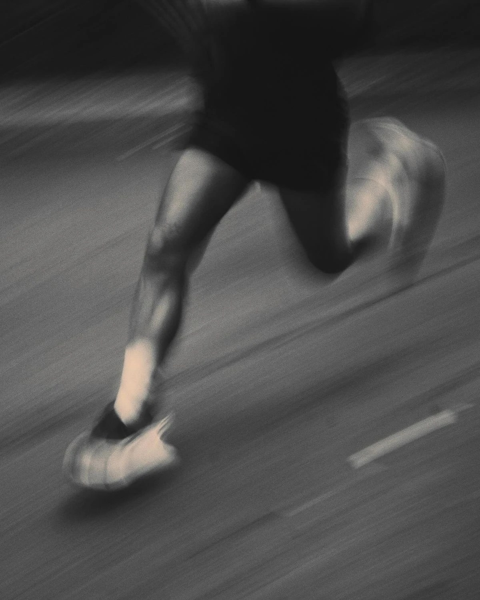

Vedení při
každém běhu.
Cílové tempo naživo a hlasové pokyny od kouče, krok za krokem.
Fast · 3 of 6
Next: recovery 400 m
Distance remaining
420
m
of 800 m
Pace
On target
4:34
/km
Too slow
4:40 to 4:30
Too fast
24:10
Total time
4.62 km
Distance
5:14
Average pace
Halfway through this one. Hold your pace.
V cílovém pásmu
4:34 /km
Hlasové pokyny
Drž tempo.